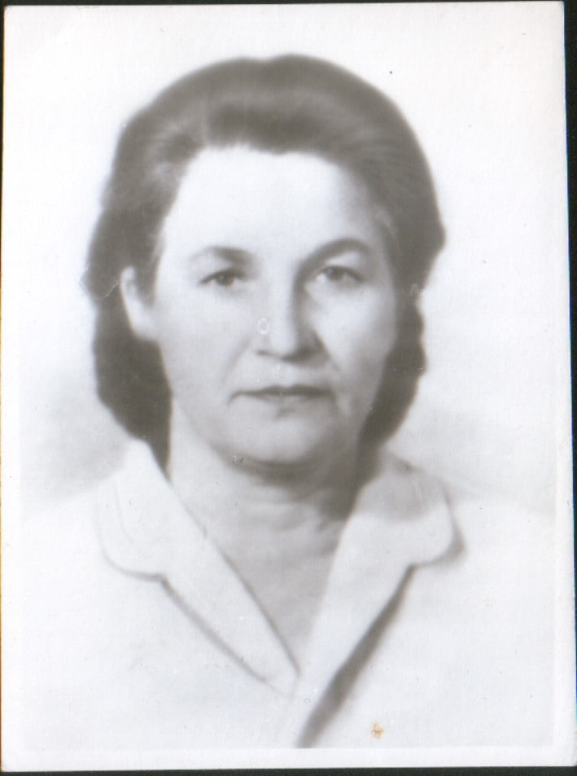

БОБОВКО ЗИНАИДА ВЛАДИМИРОВНА

Бобовко Зинаида Владимировна. Ветеран Великой Отечественной войны
Зинаида Владимировна родилась в 1923 г. в Смоленской области. Война застала её в Витебске, когда она только стала студенткой первого курса. Юная комсомолка стала активной участницей подпольного движения. В октябре 1942 г. их группа была отозвана в штаб для создания спецгруппы для действий в Витебской области. В августе 1943 г. группу передали в расположение Смоленской партизанской бригады. Партизанская война закончилась для Зинаиды Владимировны 7 августа 1944 г. — её оставили в Свирском районе учительницей начальных классов. Одновременно с этим она заочно училась в Опочском педучилище, а после и в Псковском пединституте. Позднее перебралась в Минск.
Имеет награды, среди которых:
— Медаль "За отвагу"
— Орден Красной Звезды
— Орден Отечественной войны II степени